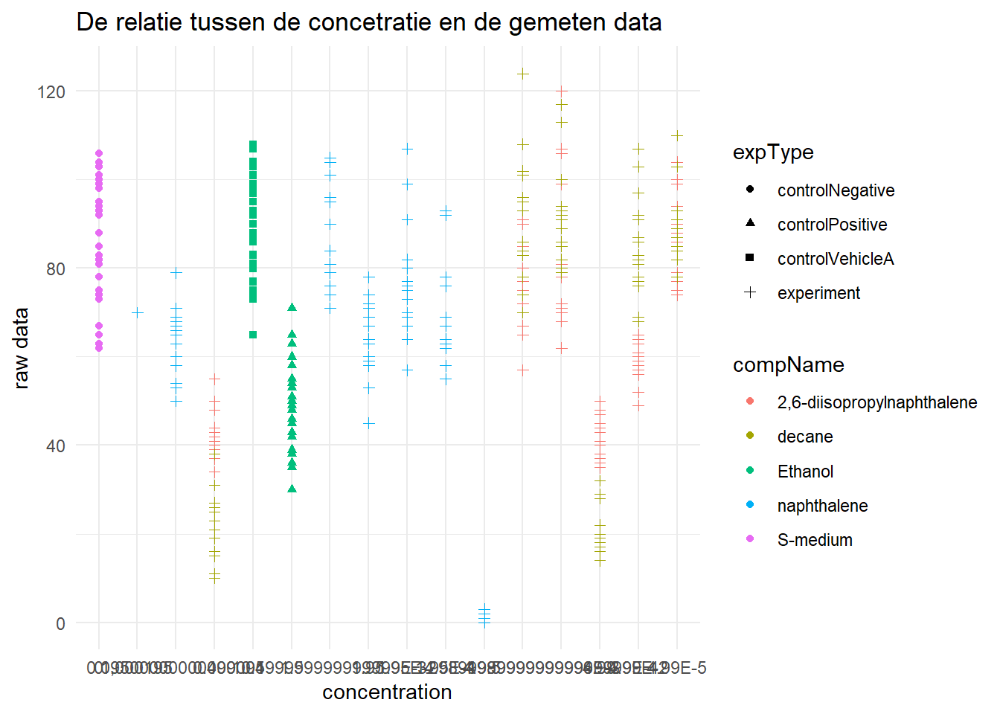
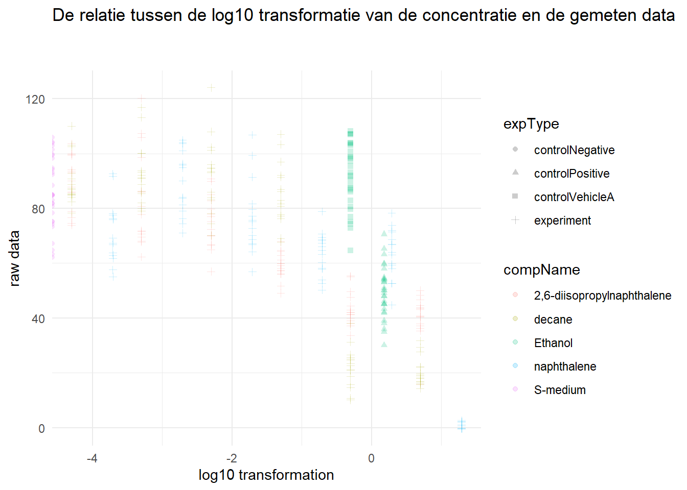
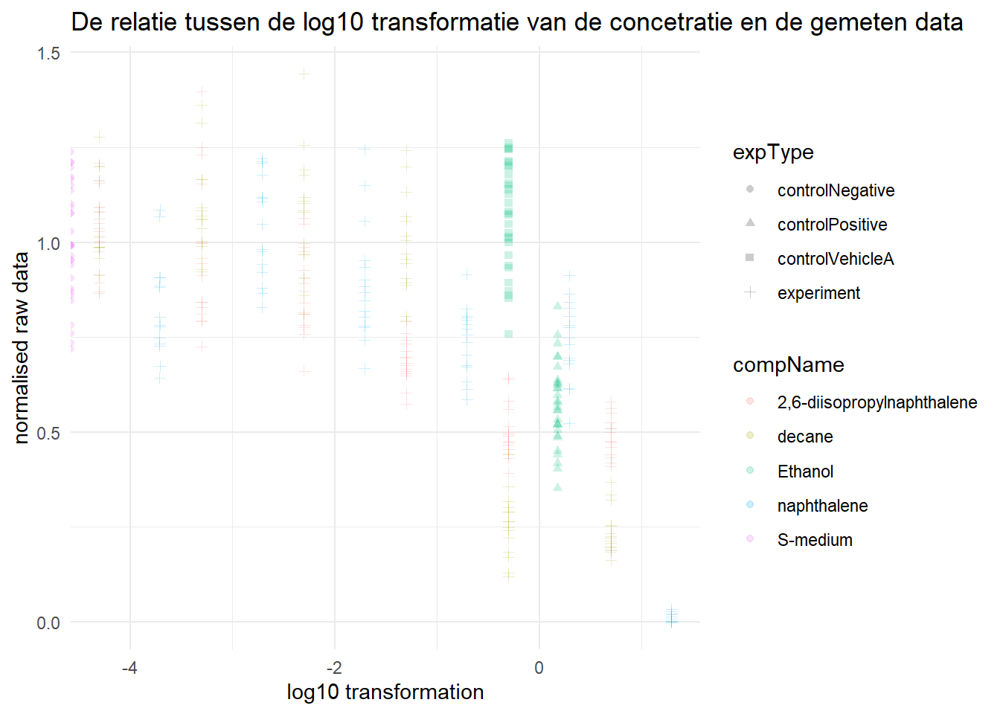

Portfolio opdracht 1 deel 1
C. elegans plaatexperiment
wat opvalt aan de excel sheet is dat het erg onoverzichtelijk is, onderdelen zijn gelabeld met kleurtjes, maar er is geen legenda waarin wordt aangegeven wat deze kleuren betekenen. De kleuren in het schema zijn erg afleidend en maken het moeilijk om de data te inspecteren. Ook valt op dat er in het de kolom “bubble” steeds de waarde #N/B staat, ook hiervan is nergens aangegeven waar dit voor staat. Er vanuitgaande dathet staat voor “niet berekend” lijkt het ook alsof de data dus niet compleet is/niet goed is afgerond. Als derde valt het op dat er veel data in dit databestand staat die in de metadata terecht hoort. wat voor incubatiebuizen er worden gebruikt, de incubatie unit, de gebruikte rpm, de incubatie themperatuur, etc. Dit is allemaal steeds de zelfde waarde, en hoort daardoor niet in dit bestand terecht. Tot slot valt op dat de raw data in het bestand toegevoegd is, dit is erg gevaarlijk, omdat het kan zijn dat je daar perongeluk en onopgemerkt weizigingen in maakt. De raw data moet altijd los opgeslagen worden en er mag alleen in een kopie hiervan gewerkt worden.
#inlezen van de excelsheet
c_elegans_plaatexp_cp <- read_excel("~/HU_ILC_DS2/Datascience2_portfolio/data/CE.LIQ.FLOW.062_Tidydata.xlsx")
#openen als tibble om te kunnen inspecteren welke gegevenstypen gegeven zijn aan de data
as_tibble(c_elegans_plaatexp_cp)## # A tibble: 360 × 34
## plateRow plateColumn vialNr dropCode expType expReplicate expName
## <lgl> <lgl> <dbl> <chr> <chr> <dbl> <chr>
## 1 NA NA 1 a experiment 3 CE.LIQ.FLOW.062
## 2 NA NA 1 b experiment 3 CE.LIQ.FLOW.062
## 3 NA NA 1 c experiment 3 CE.LIQ.FLOW.062
## 4 NA NA 1 d experiment 3 CE.LIQ.FLOW.062
## 5 NA NA 1 e experiment 3 CE.LIQ.FLOW.062
## 6 NA NA 2 a experiment 3 CE.LIQ.FLOW.062
## 7 NA NA 2 b experiment 3 CE.LIQ.FLOW.062
## 8 NA NA 2 c experiment 3 CE.LIQ.FLOW.062
## 9 NA NA 2 d experiment 3 CE.LIQ.FLOW.062
## 10 NA NA 2 e experiment 3 CE.LIQ.FLOW.062
## # ℹ 350 more rows
## # ℹ 27 more variables: expDate <dttm>, expResearcher <chr>, expTime <dbl>,
## # expUnit <chr>, expVolumeCounted <dbl>, RawData <dbl>, compCASRN <chr>,
## # compName <chr>, compConcentration <chr>, compUnit <chr>,
## # compDelivery <chr>, compVehicle <chr>, elegansStrain <chr>,
## # elegansInput <dbl>, bacterialStrain <chr>, bacterialTreatment <chr>,
## # bacterialOD600 <dbl>, bacterialConcX <dbl>, bacterialVolume <dbl>, …De verwachte gegevenstypen van de kolommen RawData, compName en compConcentration zijn als volgt; RawData hoort dbl te zijn, compName hoort chr te zijn en compConcentration hoort dbl te zijn. zoals in de tibble hierboven te zien is RawData dbl, compName een chr en compConcentration is ook een chr. compCOncentration komt dus niet overeen, dit zal later problemen veroorzaken.
#maken van een scatterplot met op de x-as de concentratie en op de y-as de ruwe data, de plot is gemaakt op basis van de data in de reader uit les 4
ggplot(data = c_elegans_plaatexp_cp, aes(x = compConcentration , y = RawData)) +
geom_point(aes(color = compName,
shape = expType))+
labs(title = "De relatie tussen de concetratie en de gemeten data",
y = "raw data",
x = "concentration") +
theme_minimal()
zoals aangegeven bij c is compConcentration een chr in plaats van een dbl, hierdoor is de volgorde van de x-as niet correct, dit moet dus aangepast worden.
#corrigeren van het gegevenstype van de compConcentration
c_elegans_plaatexp_cp$compConcentration <- as.double(c_elegans_plaatexp_cp$compConcentration)
#weergeven om te checken of de verandering correct plaatsgevonden heeft
as_tibble(c_elegans_plaatexp_cp)## # A tibble: 360 × 34
## plateRow plateColumn vialNr dropCode expType expReplicate expName
## <lgl> <lgl> <dbl> <chr> <chr> <dbl> <chr>
## 1 NA NA 1 a experiment 3 CE.LIQ.FLOW.062
## 2 NA NA 1 b experiment 3 CE.LIQ.FLOW.062
## 3 NA NA 1 c experiment 3 CE.LIQ.FLOW.062
## 4 NA NA 1 d experiment 3 CE.LIQ.FLOW.062
## 5 NA NA 1 e experiment 3 CE.LIQ.FLOW.062
## 6 NA NA 2 a experiment 3 CE.LIQ.FLOW.062
## 7 NA NA 2 b experiment 3 CE.LIQ.FLOW.062
## 8 NA NA 2 c experiment 3 CE.LIQ.FLOW.062
## 9 NA NA 2 d experiment 3 CE.LIQ.FLOW.062
## 10 NA NA 2 e experiment 3 CE.LIQ.FLOW.062
## # ℹ 350 more rows
## # ℹ 27 more variables: expDate <dttm>, expResearcher <chr>, expTime <dbl>,
## # expUnit <chr>, expVolumeCounted <dbl>, RawData <dbl>, compCASRN <chr>,
## # compName <chr>, compConcentration <dbl>, compUnit <chr>,
## # compDelivery <chr>, compVehicle <chr>, elegansStrain <chr>,
## # elegansInput <dbl>, bacterialStrain <chr>, bacterialTreatment <chr>,
## # bacterialOD600 <dbl>, bacterialConcX <dbl>, bacterialVolume <dbl>, …#log10 transformatie toevoegen aan kopie van de data
c_elegans_plaatexp_cp2 <- c_elegans_plaatexp_cp %>%
mutate(log10conc = log10(c_elegans_plaatexp_cp$compConcentration))
#maken van een scatterplot met op de x-as de log 10 transformatie van de concentratie en op de y-as de ruwe data, de plot is gemaakt op basis van de data in de reader uit les 4
ggplot(data = c_elegans_plaatexp_cp2, aes(x = log10conc, y = RawData, color = compName, shape = expType)) +
geom_jitter(alpha = 0.2)+
labs(title = "De relatie tussen de log10 transformatie van de concentratie en de gemeten data
",
y = "raw data",
x = "log10 transformation") +
theme_minimal()
Ethanol
S-Medium
Stap 1: Verzamel de gegevens
Stap 2: Verken de gegevens met grafieken om patronen en uitschieters te identificeren.
Stap 3: Analyseer het effect van de verschillende concentraties op het aantal nakomelingen
Stap 4: Pas een curvefitting-model toe, zoals logistische regressie, om de vorm van de concentratie-responscurve te bepalen.
Stap 5: Schat/bereken de IC50-waarden voor elke verbinding om eventuele verschillen tussen de verbindingen te identificeren.
Stap 6: Valideer de analyse door te controleren of de aannames van de statistische methoden worden voldaan.
Stap 7: Interpretatie: Beoordeel of er een significant effect is van concentraties op het aantal nakomelingen en of de verschillende verbindingen verschillende curves (IC50) hebben.
#het normaliseren van de controlNegative
#Stap 1: filter de juiste data (exptype == rawdata)
control_negative <- c_elegans_plaatexp_cp %>%
filter(expType == "controlNegative")
# Stap 2: Bereken het gemiddelde
gemiddelde_negative_controle <- mean(control_negative$RawData)
# Stap 3: deel alle rawData door de waarde verkregen bij gemiddelde_negative_control
c_elegans_plaatexp_cp_normalised <- c_elegans_plaatexp_cp %>%
mutate(normalised_RawData = RawData/gemiddelde_negative_controle,
log10conc = log10(c_elegans_plaatexp_cp$compConcentration))
#Stap 4: maak de plot
ggplot(data = c_elegans_plaatexp_cp_normalised, aes(x = log10conc, y = normalised_RawData, color = compName, shape = expType)) +
geom_jitter(alpha = 0.2)+
labs(title = "De relatie tussen de log10 transformatie van de concetratie en de gemeten data",
y = "normalised raw data",
x = "log10 transformation") +
theme_minimal()## Warning: Removed 6 rows containing missing
## values (`geom_point()`).
- omdat het normaliseren van de data er voor zorgt dat de schaal van de gegevens wordt gestandaardiseerd, hierdoor is het makkelijker om data met verschillende variabelen te vergelijken en combineren. Ook voorkomt het de invloed van hele grote getallen, we werken met waardes tussen de 0 en 100, dit op een kleineere schaal in beeld brengen is handiger dan op die grootte.